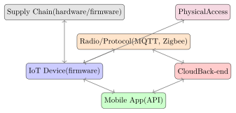

Chapter 29: IoT, Industrial Control Systems, and the Emerging Threat Horizon¶
The Internet of Things connects billions of resource-constrained devices to global networks; Industrial Control Systems govern critical infrastructure; and the horizon beyond holds quantum computers, AI-generated malware, and supply-chain attacks whose sophistication eclipses most of what came before. This chapter surveys the attack surface of embedded and operational technology, connects historical incidents to current defensive guidance, and prepares the security engineer for the challenges of the next decade.
29.1 IoT Attack Surface¶

Key IoT vulnerabilities:
-
Default Credentials: Factory-default usernames and passwords rarely changed; trivially exploited (see Mirai botnet).
-
Insecure Firmware: No signature verification; update channel over HTTP; debugging interfaces (UART, JTAG) exposed.
-
Insecure Protocols: MQTT with no authentication; CoAP without DTLS; Zigbee pairing without channel encryption.
-
Physical Access: UART console accessible on PCB; JTAG debug port enables full firmware extraction; no secure boot.
-
Supply Chain: Counterfeit components; malicious firmware injected by ODM; compromised build environment.
29.1.1 IoT Firmware Security in Practice¶
Most IoT devices run a stripped Linux kernel with BusyBox—a single binary that packs dozens of Unix utilities (sh, wget, ifconfig, netstat) into a few hundred kilobytes. This is why IoT devices are so attractive to botnet operators: the tools needed to scan the internet, fetch a payload, and establish persistence are already on the device.
Firmware images for IoT devices are frequently available without authentication. Vendors publish them on their support pages for firmware updates; sometimes they can be extracted directly from the device’s flash chip using a SOIC-8 clip and a bus pirate or dedicated flash programmer. This accessibility enables security research—and attacker reconnaissance—at scale.
Binwalk is the standard tool for firmware analysis. It scans a firmware binary for recognisable magic bytes (gzip headers, JFFS2/SquashFS filesystem signatures, LZMA compressed data) and extracts the embedded components. A typical run reveals a SquashFS root filesystem containing the vendor’s application code, configuration files, and—frequently—hardcoded credentials, private keys, or debug backdoors left in production builds.
# Install binwalk and extraction dependencies
apt-get install binwalk squashfs-tools
# Scan firmware image for embedded file signatures
binwalk router-firmware-v2.4.1.bin
# Extract all identified components
binwalk -e router-firmware-v2.4.1.bin
# Creates _router-firmware-v2.4.1.bin.extracted/
# Scan extracted filesystem for sensitive strings
firmwalker.sh _router-firmware-v2.4.1.bin.extracted/squashfs-root/
# Manual checks for common issues
grep -r "password" _router-firmware/squashfs-root/etc/ \
--include="*.conf" --include="*.cfg"
# Find hardcoded private keys
grep -r "BEGIN.*PRIVATE KEY" _router-firmware/squashfs-root/
grep -r "BEGIN.*RSA" _router-firmware/squashfs-root/
# Find listening services
grep -r "telnetd\|dropbear\|sshd" \
_router-firmware/squashfs-root/etc/init.d/
Firmwalker automates many of these searches: it scans an extracted filesystem for passwords in configuration files, private SSL/TLS keys, telnet and SSH service configurations, email addresses, IP addresses, and common backdoor strings. A five-minute firmwalker run on a vendor’s firmware image often reveals more about the device’s security posture than a week of network testing.
Hardcoded credentials remain the most common and most severe IoT vulnerability class. The Mirai botnet used a list of 61 default credential pairs harvested from IoT vendor documentation and firmware analysis—pairs like admin/admin, root/xc3511, guest/12345—and achieved a 1.2 Tbps DDoS attack by exploiting the fact that millions of devices ship with these credentials unchanged. Regulatory pressure is finally addressing this: the UK Product Security and Telecommunications Infrastructure (PSTI) Act 2022 prohibits universal default passwords in consumer IoT products sold in the UK, requiring each device to have a unique default password or to force a password change on first use. The US Cyber Trust Mark programme for IoT devices similarly addresses credential hygiene as a baseline requirement.
29.2 Mirai Botnet: Case Study¶
Mirai Botnet (2016)
Mirai was a botnet targeting Linux-based IoT devices (cameras, DVRs, routers) running BusyBox. Its propagation mechanism:
-
Scan the internet for Telnet (port 23) with a hardcoded list of approximately 60 default username/password pairs.
-
Upon successful login, report the victim to a loader server.
-
Loader pushes a platform-appropriate Mirai binary; binary joins the botnet.
-
Command-and-Control (C2) issues DDoS commands: TCP SYN flood, UDP flood, HTTP flood.
Peak attack: 1.2 Tbps against Dyn DNS (October 2016), disrupting Twitter, Netflix, Reddit, and GitHub.
Mirai’s lessons remain applicable today:
-
ISP-side BCP38 ingress filtering prevents IP spoofing used in reflection attacks.
-
Regulatory requirements for unique default credentials per device (UK PSTI Act 2022) directly address the root cause.
-
Network-level segmentation of IoT devices onto isolated VLANs with no internet access unless explicitly required limits botnet utility.
29.3 Firmware Security¶
Definition 29.1 (Secure Boot)
Secure boot ensures that only firmware cryptographically signed by a trusted key executes during device startup. The chain of trust begins in immutable ROM (the Root of Trust), which verifies the bootloader signature, which in turn verifies the OS kernel.
| Control | Mechanism |
|---|---|
| Secure Boot | ECDSA-P256 signature on firmware image; verified by ROM bootloader |
| Anti-Rollback | Monotonic counter in OTP fuses; firmware version embedded; old firmware rejected |
| Firmware Encryption | AES-256 encryption of firmware image stored in flash; decryption key in secure element |
| SUIT Manifest | RFC 9124 manifest describes expected digest, version, and installation conditions; parsed before any write |
| Secure OTA | TLS 1.3 update channel; SUIT manifest verification before flash write; canary value preserved |
/* Pseudocode: SUIT manifest verification before OTA apply */
suit_manifest_t manifest;
if (suit_parse(manifest_cbor, &manifest) != SUIT_OK)
abort_update("Manifest parse failed");
/* Verify authentication wrapper: COSE_Sign1 with vendor key */
if (suit_authenticate(&manifest, vendor_public_key) != SUIT_OK)
abort_update("Signature verification failed");
/* Check version is newer than installed firmware */
if (manifest.version <= current_firmware_version())
abort_update("Anti-rollback: version not newer");
/* Verify payload digest (SHA-256) before flashing */
if (!sha256_verify(manifest.digest, firmware_blob))
abort_update("Payload digest mismatch");
apply_firmware(firmware_blob);
29.4 ICS/OT Security¶
Definition 29.2 (Industrial Control System)
An Industrial Control System (ICS) encompasses the hardware and software used to monitor and control industrial processes: Programmable Logic Controllers (PLCs), SCADA systems, Distributed Control Systems (DCS), and Human-Machine Interfaces (HMIs).
29.4.1 The Purdue Model¶
The Purdue Enterprise Reference Architecture organises ICS networks into hierarchical levels:
| Level | Name | Components |
|---|---|---|
| 0 | Field Level | Sensors, actuators, motors |
| 1 | Control Level | PLCs, RTUs, DCS controllers |
| 2 | Supervisory Level | SCADA servers, HMIs |
| 3 | Operations Level | Historian, engineering workstations |
| 3.5 | DMZ | Data diode, jump server (IT/OT boundary) |
| 4 | Business Level | ERP, corporate IT network |
The IT/OT boundary (Level 3.5 DMZ) is the critical control point. Colonial Pipeline (2021) was compromised via the IT network; the OT network was shut down proactively due to fear of lateral movement, not direct OT compromise.
29.4.2 Stuxnet: The First Known Cyber Weapon¶
Stuxnet Analysis
Stuxnet (2010, attributed to US/Israel Operation Olympic Games) targeted Siemens S7-315 PLCs controlling uranium enrichment centrifuges at Natanz, Iran.
-
Delivery: USB drive; spread via four Windows zero-days.
-
Targeting: Activated only on Siemens Step 7 systems with specific VFD drive configuration (matched the Natanz profile).
-
Payload: Modified centrifuge spin speeds (destructive) while reporting normal values to operators (deception).
-
Signed Drivers: Used stolen Realtek and JMicron certificates for kernel-mode driver signing.
-
Significance: The first publicly known cyberweapon causing physical destruction; demonstrated that ICS networks are targetable regardless of air-gap; permanently altered geopolitical norms around cyber operations.
29.4.3 OT Monitoring¶
Passive Monitoring Only in OT
Active scanning in OT environments (e.g., running Nmap against a PLC) can crash or disrupt the controller. OT-specific monitoring platforms (Dragos, Claroty, Nozomi Networks) use passive network taps and protocol dissection to provide asset inventory and anomaly detection without generating any traffic.
29.4.4 OT/ICS Protocol Security¶
Operational technology (OT) networks run on protocols designed decades ago for reliability and determinism in isolated industrial environments. Security was an afterthought at best, and often not a thought at all.
Modbus TCP (the most widely deployed SCADA protocol, originally Modbus RTU from 1979) has no authentication, no authorisation, and no encryption. Any device on the network that can reach a Modbus server can read any register and write to any coil—including the register values that control physical actuators like valves, pumps, and motor drives. Wrapping Modbus in a TLS tunnel requires replacing protocol stacks on potentially thousands of PLCs and RTUs that have no firmware update capability, which is why Modbus remains unencrypted in the vast majority of deployed installations.
DNP3 (Distributed Network Protocol 3) is common in electrical utility SCADA systems. A Secure Authentication extension (DNP3-SA, IEEE 1815) adds HMAC-based authentication to critical operations, but adoption is incomplete: legacy outstations (remote terminal units) predate the extension and can’t be easily upgraded.
IEC 61850 is the modern standard for substation automation, designed with GOOSE (Generic Object Oriented Substation Event) messages for time-critical protection signalling over Ethernet. GOOSE has authentication support in the latest edition, but not encryption—the latency requirements for protection relay coordination (millisecond-level) are difficult to meet with full cryptographic processing on embedded hardware.
The Purdue Model (formalised as ISA/IEC 62443) addresses this by focusing on network segmentation rather than protocol hardening. If Modbus devices live entirely within Level 1–2 and can’t be reached from corporate IT or the internet, the lack of authentication is less critical. The DMZ at Level 3.5 is the boundary that matters most, and controlling what crosses it—via data diodes for unidirectional replication, application-layer gateways that translate and inspect protocol content, and strict allowlists of permitted communications—is the practical security posture for most OT environments.
Stuxnet demonstrated the most uncomfortable fact about OT security: even physical isolation (air-gapping) doesn’t guarantee protection if the threat model includes USB drives, compromised laptop computers used for engineering work, or insider access. The Natanz enrichment facility was air-gapped; Stuxnet crossed the gap via infected USB drives used by contractors. The lesson isn’t that air-gaps are useless—they meaningfully raise the attack cost—but that they’re not a complete security strategy.
OT security faces a patching problem that IT security doesn’t. In IT, “apply the patch” is the default response to a disclosed vulnerability. In OT:
-
Firmware updates to PLCs require vendor validation and qualification testing—the vendor must certify that the update doesn’t alter control behaviour.
-
Production systems run continuously; a maintenance window to patch a running centrifuge system or a water treatment pump is scheduled in advance, sometimes months out.
-
SCADA systems are designed for 20–30 year operational lifetimes. Embedded components running Windows XP or a 2005 Linux kernel may never receive security patches because the vendor is no longer operational or no longer supports that product generation.
This means compensating controls—network segmentation, monitoring, whitelisting, and physical access controls—carry more weight in OT than they do in IT, where patching is a realistic primary control.
29.5 Post-Quantum Migration for IoT¶
NIST finalised three post-quantum cryptography standards in 2024: CRYSTALS-Kyber (FIPS 203 / ML-KEM), CRYSTALS-Dilithium (FIPS 204 / ML-DSA), and SPHINCS+ (FIPS 205 / SLH-DSA). IoT devices present unique challenges for migration:
| Constraint | Challenge | Solution |
|---|---|---|
| RAM (\(<\) 32 KB) | ML-KEM-512 requires \(\approx\) 1.6 KB stack | Stack-efficient implementation; ASCON for symmetric |
| Flash (\(<\) 128 KB) | ML-DSA signatures are 2.4 KB | SLH-DSA (hash-based) for code signing; smaller key/sig |
| CPU (8/16-bit MCU) | Lattice arithmetic is compute-intensive | Hardware acceleration or hybrid ECC + KEM |
| Lifetime \(>\) 10 yr | Algorithms must survive cryptographic advances | Agility: parameterise algorithm in SUIT manifest |
XMSS (eXtended Merkle Signature Scheme, RFC 8391) is a stateful hash-based signature scheme suited for firmware signing where a small, fixed number of signatures are needed and state can be maintained securely (e.g., in a Hardware Security Module or OTP counter).
29.6 Blockchain and Web3 Security¶
| Vulnerability | Description | Example |
|---|---|---|
| Reentrancy | Recursive external call before state update; classic DAO hack pattern | The DAO hack (2016, $60M) |
| Integer Overflow | Unchecked arithmetic in Solidity \(<\) 0.8 wraps silently | BECToken batch overflow |
| Access Control | onlyOwner missing; initialize() callable by anyone |
Parity Multisig freeze |
| Flash Loan Attacks | Uncollateralised loan within one transaction exploits price oracle | Multiple DeFi protocols |
| Bridge Vulnerabilities | Cross-chain bridges hold large locked assets; complex validator logic | Ronin Bridge ($625M, 2022) |
| Rug Pull | Developers drain liquidity pool; mint() with no cap |
Numerous DeFi tokens |
// VULNERABLE: state update after external call
function withdraw(uint amount) external {
require(balance[msg.sender] >= amount);
(bool success,) = msg.sender.call{value: amount}(""); // external call
require(success);
balance[msg.sender] -= amount; // state updated AFTER call: reentrancy!
}
// FIXED: Checks-Effects-Interactions pattern
function withdraw(uint amount) external {
require(balance[msg.sender] >= amount); // Check
balance[msg.sender] -= amount; // Effect (state update first)
(bool success,) = msg.sender.call{value: amount}(""); // Interaction
require(success);
}
29.7 5G Security¶
5G improves subscriber privacy and authentication over 4G LTE in several concrete ways:
- SUCI (Subscription Concealed Identifier)
- The subscriber’s permanent identifier (SUPI / IMSI) is encrypted with the home network’s public key before transmission to the gNB; prevents IMSI catchers (stingrays) from harvesting subscriber identities.
- 5G-AKA Protocol
- Mutual authentication between UE and home network; derives session keys (KAUSF, KSEAF, KAMF) through a HKDF-based key hierarchy; gNB does not learn the session root key.
- Network Slice Isolation
- Logical slices must be isolated at the packet core level; a compromise of one slice must not yield access to another; validated via 3GPP TS 33.501.
- Residual Threats
- SS7/Diameter vulnerabilities in roaming interfaces remain; IMSI catchers now require radio downgrade attacks; protocol fuzzing of 5G NAS layer is an active research area.
29.7.1 5G Network Slicing and Residual Threats¶
5G’s network slicing capability creates multiple virtual networks on top of shared physical infrastructure—a mobile operator can run a slice for IoT devices (low bandwidth, high device count), a slice for enterprise private networks (guaranteed latency), and a slice for consumer broadband (high throughput), all on the same radio access network and core infrastructure. The isolation between slices relies on software enforcement in the 5G core (5GC), specifically in the Session Management Function (SMF) and User Plane Function (UPF).
The critical word is “software enforcement.” Unlike physical network separation, slice isolation depends on correct implementation of the 5G core, proper configuration of QoS and traffic steering policies, and the absence of bugs in the inter-slice firewall logic. Academic researchers have demonstrated inter-slice attacks on 5G testbeds where a compromised or malicious UE in one slice could generate traffic that leaked into another slice’s UPF queue. These are not yet confirmed at-scale field attacks, but they’re a genuine research concern as 5G private networks become critical enterprise infrastructure.
More practically dangerous today are attacks exploiting the legacy interconnect infrastructure that 5G must maintain for global roaming. 5G is not deployed in isolation—when a 5G subscriber roams internationally, their traffic may traverse SS7 links to reach their home network for authentication and charging. SS7 (Signalling System 7), designed in 1975, has no authentication on its inter-carrier messages: a network with access to the SS7 interconnect can send any message on behalf of any operator, enabling location tracking, SMS interception, and call redirection against any subscriber worldwide. The Diameter protocol (used in 4G) has similar vulnerabilities. Interconnect firewalls deployed by operators filter known-bad SS7 message patterns, but they’re a cat-and-mouse game against motivated actors with legitimate SS7 access (which includes hundreds of telecoms operators globally).
IMSI catchers (commercially known as StingRays, or by their technical name IMSI catchers / false base stations) exploit a different residual vulnerability. 5G devices prioritise connecting to 5G cells, but radio coverage is incomplete in many areas. A device that can’t reach a 5G base station will fall back to 4G or even 2G, depending on what’s available. An attacker operating a fake 2G base station can force 4G/5G capable devices to downgrade, and 2G GSM has no mutual authentication—the phone authenticates to the network but the network doesn’t authenticate to the phone. This allows a fake 2G base station to intercept calls and SMS messages. The 5G SUCI mechanism (encrypting the subscriber identity before it’s transmitted) doesn’t help if the device has already downgraded to 2G. Defenders: FIDO2 for application-layer authentication is immune to SS7/IMSI-catcher attacks because the WebAuthn assertion never travels over the cellular authentication channel.
29.8 Supply Chain Attacks: SolarWinds and XZ Utils¶
XZ Utils Backdoor (2024)
In early 2024, a malicious maintainer using the alias “Jia Tan” (active since 2021) obtained commit rights to the xz compression library. Over several months, Jia Tan introduced an obfuscated backdoor into the liblzma build system.
-
Target: Systems running
systemd-patchedsshdthat linked againstliblzma. -
Mechanism: A shared library injected via
LD_PRELOADintosshdintercepted RSA key decryption; it allowed the attacker to authenticate without a valid private key using a specially crafted public key. -
Detection: Andres Freund (Microsoft) noticed a 500ms SSH login latency anomaly on a Debian unstable system; CPU profiling revealed
liblzmaconsuming unexpected cycles. -
Severity: Had it reached stable distributions, it would have constituted a near-universal SSH backdoor on Linux servers.
-
Lessons: Long-term trust-building by a malicious maintainer; reproducible builds; SBOM tracking; binary transparency logs.
29.8.1 Hardware Supply Chain Attacks¶
Software supply chain attacks are well-understood and increasingly defended. Hardware supply chain attacks are harder to detect, harder to remediate, and operate in a world where the public evidence base is thin—partly because confirmed cases are classified, and partly because hardware implant detection requires specialised inspection capabilities most organisations don’t have.
The public debate was sharpened by Bloomberg Businessweek’s October 2018 article claiming that servers manufactured by Supermicro for Amazon Web Services and Apple contained malicious microchips implanted during manufacturing in China, allowing remote access to the server’s baseboard management controller. Amazon, Apple, and Supermicro issued detailed denials; no independent technical evidence has been publicly confirmed. The article remains disputed. What the episode did accomplish was forcing boardroom-level awareness of hardware supply chain risk and prompting US government agencies to issue guidance on supply chain risk management (NIST SP 800-161).
What is confirmed from the Snowden documents is the NSA’s TAO (Tailored Access Operations) division operated a programme called COTTONMOUTH—a USB hardware implant that fit inside a standard USB connector housing and provided radio frequency covert channel capability. The leaked ANT catalogue (2013) showed over a dozen hardware implant products for servers, networking equipment, and peripherals. These weren’t theoretical; they were operational tools with order numbers and pricing.
The practical defence posture for most organisations does not include hardware teardown inspection—that’s reserved for extremely high-security deployments (intelligence agencies, nuclear command and control). For everyone else, the effective controls are:
- Hardware Bill of Materials (HBOM)
- Analogous to SBOM for software, an HBOM documents the components of a hardware device: PCB manufacturer, component suppliers, assembly location. Knowing where each component came from is prerequisite to detecting unexpected substitutions.
- Component Authenticity Verification
- IEEE 802.1AR defines IDevID (Initial Device Identifier): an X.509 certificate provisioned in the device at manufacturing time, signed by the manufacturer’s CA, and stored in tamper-resistant hardware (a secure element or TPM). An IDevID lets you verify that the device in your rack is the device the manufacturer produced, not a counterfeit. This is becoming standard in enterprise networking equipment (Cisco, Juniper) and server platforms.
- Trusted Platform Modules and Firmware Attestation
- TPM-based attestation (UEFI Secure Boot measurement chains, Platform Certificate Authority) lets the server prove to a remote verifier that its firmware is unmodified. A hardware implant that modifies boot firmware would alter the TPM’s PCR measurements and fail attestation. This doesn’t catch implants below the BIOS (in the PCB itself) but covers a large class of firmware-level supply chain attacks.
- Supply Chain Diversity
- For critical infrastructure, dual-sourcing from manufacturers in different geopolitical jurisdictions reduces the risk that a single nation-state compromise of a supplier affects all deployed hardware.
29.9 Emerging Threat Timeline¶
| Threat | Estimated Timeline | Preparation Status |
|---|---|---|
| Cryptographically Relevant Quantum Computer (CRQC) | 2030–2035 estimate | PQC standards finalised (FIPS 203/204/205); migration underway |
| AI-Generated Malware (polymorphic, evasive) | Now – 2026 | AV/EDR ML detection; behavioural heuristics |
| Deepfake-Enabled Fraud at Scale | Now – 2027 | FIDO2 adoption; out-of-band verification |
| Autonomous AI Agents in Offensive Operations | 2026 – 2028 | Research stage; no deployed defences |
| LLM-Assisted Vulnerability Discovery | Now | Defenders use same tools; race condition |
| GPS/Timing Attack on IoT via Spoofing | Now | Authenticated PNT (M-Code GPS); software timing redundancy |
| Smart Grid / Critical Infrastructure Ransomware | Now | ICS segmentation; OT monitoring; CISA advisories |
| Satellite Command Link Compromise | 2025 – 2030 | CCSDS encryption standards; ground-segment hardening |
29.10 Space and Satellite Security¶
Satellite systems present a distinct attack surface:
-
Command Link: Telecommand uplinks must be authenticated (CCSDS 352.0-B-1 Security Layer) to prevent unauthorised manoeuvres.
-
GPS Spoofing: Counterfeit GPS signals affect IoT device clocks, financial transaction timestamps, and ADS-B aircraft position. Mitigation: multi-constellation receivers (GPS + Galileo + GLONASS); authenticated PNT for critical applications.
-
Ground Segment: Operations centres face standard IT threats; the Viasat KA-SAT wiper attack (February 2022, Ukraine) disrupted thousands of modems via ground-segment compromise.
29.11 Quantum-Safe IoT¶
IoT devices face a harder post-quantum migration than servers or cloud infrastructure, for reasons that are simultaneously obvious and underappreciated by the teams planning enterprise PQC migrations.
The constraints are physical. A typical Cortex-M0+ microcontroller (common in sensors, wearables, and smart home devices) has 16–32 KB of SRAM and 256 KB of flash. A Cortex-M4 (mid-tier: industrial sensors, smart meters) has 192 KB to 1 MB of SRAM and 1–2 MB of flash. At the low end, 8-bit microcontrollers (ATmega, PIC) may have as little as 512 bytes of SRAM. Classical elliptic curve cryptography (ECDH P-256, ECDSA P-256) was engineered to be lightweight: the key exchange stack fits in under 4 KB. Post-quantum algorithms, built on lattice problems or hash functions, are larger.
| Algorithm | Public Key | Ciphertext / Sig | Stack (Cortex-M4) | Time (M4 @ 64 MHz) |
|---|---|---|---|---|
| ECDH P-256 | 64 B | 64 B | \(\sim\)2 KB | \(\sim\)10 ms |
| ML-KEM-512 | 800 B | 768 B | \(\sim\)1.6 KB | \(\sim\)2 ms |
| ML-KEM-768 | 1184 B | 1088 B | \(\sim\)2.1 KB | \(\sim\)3 ms |
| ML-DSA-44 | 1312 B | 2420 B | \(\sim\)8 KB | \(\sim\)8 ms |
| SLH-DSA-128s | 32 B | 7856 B | \(\sim\)2 KB | \(\sim\)100 ms |
| ECDSA P-256 | 64 B | 64 B | \(\sim\)3 KB | \(\sim\)15 ms |
The headline result: ML-KEM-512 on a Cortex-M4 is feasible. At approximately 1.6 KB stack and 2 ms per operation, it’s lighter than ECDH P-256 in both dimensions on that platform. This is a deliberate design goal of CRYSTALS-Kyber—the lattice operations map efficiently onto 32-bit multiply-and-accumulate instructions. For mid-tier IoT (smart meters, industrial sensors, medical devices), the PQC migration is an engineering project but not a fundamental constraint.
The picture is different for 8-bit microcontrollers. ML-KEM’s polynomial arithmetic requires 256-coefficient polynomial multiplication in the NTT (Number Theoretic Transform) domain—workable on a 32-bit platform, but on an 8-bit MCU with 512 bytes of SRAM it’s simply not feasible. The NIST Lightweight Cryptography standardisation project addresses this case: Ascon (NIST SP 800-232, finalised 2023) is a family of authenticated encryption (AEAD) and hashing schemes designed for hardware implementations under 1000 gate equivalents and software implementations on 8-bit processors. Ascon-128 needs about 320 bytes of state and fits comfortably on microcontrollers where ML-KEM cannot. Ascon is a symmetric primitive, not a key exchange—it addresses the confidentiality and authentication of data in transit, but you still need an asymmetric scheme to establish the initial shared key.
For firmware signing on constrained devices, where the key exchange happens offline (a developer signs firmware; the device verifies at boot) and the verification key is embedded in ROM, SLH-DSA (FIPS 205, hash-based) is attractive: the public key is only 32 bytes, the security relies only on hash function security (not lattice assumptions), and signature verification is faster than signing. The 7.8 KB signature size is large relative to a small firmware binary but acceptable when verification happens infrequently at boot time.
The deepest problem for IoT PQC migration is not algorithm selection but firmware update infrastructure. Many deployed IoT devices have no over-the-air update mechanism, or have one that’s unsigned and unauthenticated (CVE-database entries for unsigned OTA are depressingly common). A device that can’t receive a firmware update can’t migrate to PQC algorithms—and if it’s using ECDH for TLS and will remain deployed for 15 years, it will be communicating with post-quantum attackers using pre-quantum key exchange. Crypto agility at design time—parameterising the algorithm suite in the SUIT firmware manifest so it can be updated independently of the application firmware—is the right approach, but it requires planning the architecture before devices ship.
Harvest Now, Decrypt Later and IoT
IoT devices with 10–20 year lifetimes face HNDL (Harvest Now, Decrypt Later) risk: traffic encrypted with ECDH today can be recorded by an adversary and decrypted in 2033–2035 if a cryptographically relevant quantum computer (CRQC) becomes available on that timeline. This is most acute for devices transmitting sensitive health, infrastructure, or financial data. Hybrid key exchange (combining classical ECDH with ML-KEM in a dual-PRF construction) provides protection against a future CRQC while maintaining security against classical attacks in the present, and adds only modest size overhead to the key exchange message.
Exercises¶
Exercise 29.1
Design a secure over-the-air (OTA) firmware update mechanism for a resource-constrained IoT device with 64 KB RAM, 512 KB flash, and a Cortex-M4 processor. Your design must address: (a) cryptographic algorithm selection (consider post-quantum readiness), (b) anti-rollback mechanism, (c) manifest format and verification steps, (d) failure recovery (power loss during update), and (e) key management for the signing key.
Exercise 29.2
Explain the significance of Stuxnet in the history of cyber conflict. Address: (a) the technical mechanisms that made it effective against an air-gapped OT environment, (b) the four Windows zero-days and how they enabled propagation, (c) the deception mechanism that hid the attack from operators, and (d) the geopolitical and legal norms that Stuxnet’s revelation altered.
Exercise 29.3
An organisation operates a water treatment SCADA system connected to a corporate IT network via a single firewall. Perform a threat analysis: (a) map the system to the Purdue model levels, (b) identify the three most critical attack paths, (c) propose network architecture changes to reduce risk, (d) specify what OT monitoring tools and methods are appropriate and why active scanning must be avoided.
Exercise 29.4
A post-quantum migration team must select algorithms for a fleet of IoT devices that will remain deployed for 15 years. The devices use TLS 1.3 for OTA updates and ECDSA for firmware signing. (a) Identify which algorithms are vulnerable to a CRQC and by what year they may be broken. (b) Recommend specific NIST PQC standards to replace each algorithm, justifying your choice based on device constraints. (c) Explain what “crypto agility” means and how it should be implemented in the SUIT firmware manifest to support future algorithm rotation.